2018年普通高等学校招生全国统一考试 理科综合能力测试（全国Ⅰ卷）
注意事项：1．答卷前，考生务必将自己的姓名、准考证号填写在答题卡上。2．回答选择题时，选出每小题答案后，用铅笔把答题卡上对应题目的答案标号涂黑，如需改动，用橡皮擦干净后，再选涂其它答案标号。回答非选择题时，将答案写在答题卡上，写在本试卷上无效。3．考试结束后，将本试卷和答题卡一并交回。
本册收录物理部分，保留原题号14—25、33、34及全部小问；其他学科题文和相对原子质量表不属于本册范围。物理作答总分为110分：选择题48分、必考非选择题47分、选考15分。33、34两题均提供解析，考试时按原卷规则任选一题作答。
相关题目：第 14 题
本题共8小题，每小题6分，共48分。在每小题给出的四个选项中，第14—18题只有一项符合题目要求，第19—21题有多项符合题目要求。全部选对的得6分，选对但不全的得3分，有选错的得0分。
相关题目：第 14 题 · 第 15 题 · 第 16 题 · 第 17 题 · 第 18 题 · 第 19 题 · 第 20 题 · 第 21 题
返回原卷说明与本册范围 返回二、选择题（48分）
题目与已知条件
高铁列车在启动阶段的运动可看作初速度为零的匀加速直线运动，在启动阶段列车的动能
查看原题图／原始配图
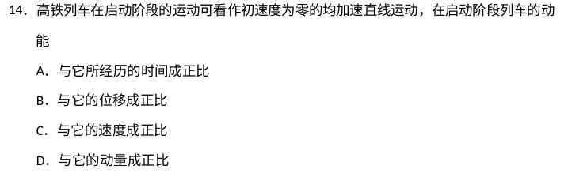
原始配图 1 · 原题及原图读题与思路
初速度为零，消去速度后可直接判断动能与位移的关系。
分步解析
- v=at，所以Ek=mv²/2=ma²t²/2，动能正比于时间的平方，A错。
- 由v²=2ax，Ek=max。m、a均恒定，因此动能与位移成正比，B正确。
- Ek正比于v²而非v；由p=mv，Ek=p²/(2m)，正比于p²而非p，C、D错误。
检查与易错点
只有在初速为零且合力恒定时，动能才与从该初始点算起的位移成正比。
本题来源：paper · cross · drive-ref-1 · web-primary-doc
返回二、选择题（48分）
题目与已知条件
如图，轻弹簧的下端固定在水平桌面上，上端放有物块P，系统处于静止状态，现用一竖直向上的力F作用在P上，使其向上做匀加速直线运动，以x表示P离开静止位置的位移，在弹簧恢复原长前，下列表示F和x之间关系的图像可能正确的是
轻弹簧、物块P及竖直向上的力F查看原题图／原始配图
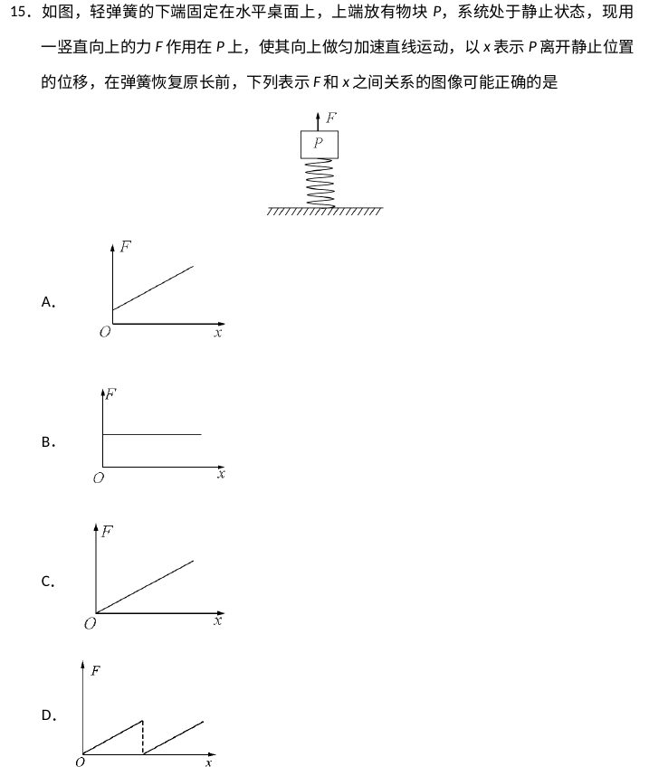
原始配图 1 · 原题及原图所用高中知识
胡克定律；牛顿第二定律；函数斜率与截距。
读题与思路
位移x使弹簧支持力逐渐减小。为了保持同一向上加速度，外力必须逐渐增加。
分步解析
- 设初始压缩量x₀，静止平衡有kx₀=mg。物体上升x且尚未离开弹簧时，弹力F弹=k(x₀−x)。
- 向上列牛顿第二定律：F+k(x₀−x)−mg=ma。代入kx₀=mg，得到F=kx+ma。
- 所以F—x图为正斜率k、正截距ma的直线，对应A。B无斜率，C过原点，D断续，均不符。
检查与易错点
开始匀加速运动时外力就需提供ma，F并非从零连续起增。四个原图均已保留，不能只靠“上升直线”的口述辨选。
本题来源：paper · cross · drive-ref-1 · web-primary-doc
返回二、选择题（48分）
题目与已知条件
如图，三个固定的带电小球a、b和c，相互间的距离分别为ab=5 cm，bc=3 cm，ca=4 cm。小球c所受库仑力的合力的方向平行于a、b的连线。设小球a、b所带电荷量的比值的绝对值为k，则
带电小球a、b、c的3∶4∶5三角形位置关系查看原题图／原始配图
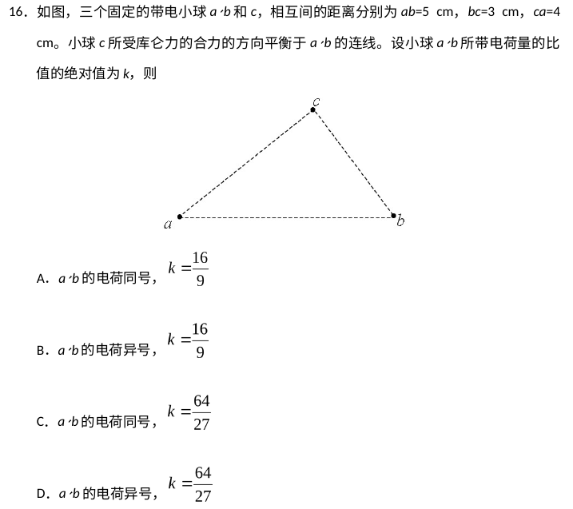
原始配图 1 · 原题及原图A.a、b的电荷同号，
B.a、b的电荷异号，
C.a、b的电荷同号，
D.a、b的电荷异号，
读题与思路
研究对象是c球，不是a球。由3—4—5三角形确定两力的竖直分量比例，再求电荷比。
分步解析
- ab=5 cm、ac=4 cm、bc=3 cm，故∠acb=90°。要使c所受合力平行ab，两力竖直分量必须相反，所以a、b与c的作用分别为吸引和排斥，a、b必异号。
- 两力三角形与几何三角形相似，竖直分量抵消要求Fac:Fbc=4:3。
- 由库仑定律，Fac/Fbc=(|qa|/|qb|)×(bc/ac)²=k×9/16=4/3，所以k=64/27。
检查与易错点
研究对象是c球：两力的竖直分量必须抵消，才能使合力平行于ab；由此先判异号，再用3∶4∶5三角形求电荷量之比。
本题来源：paper · cross · drive-ref-1 · web-primary-doc
返回二、选择题（48分）
题目与已知条件
如图，导体轨道OPQS固定，其中PQS是半圆弧，Q为半圆弧的中点，O为圆心。轨道的电阻忽略不计。OM是有一定电阻、可绕O转动的金属杆、M端位于PQS上，OM与轨道接触良好。空间存在与半圆所在平面垂直的匀强磁场，磁感应强度的大小为B，现使OM从OQ位置以恒定的角速度逆时针转到OS位置并固定（过程Ⅰ）；再使磁感应强度的大小以一定的变化率从B增加到B′（过程Ⅱ）。在过程Ⅰ、Ⅱ中，流过OM的电荷量相等，则等于
导体轨道OPQS、金属杆OM与虚线OQ查看原题图／原始配图
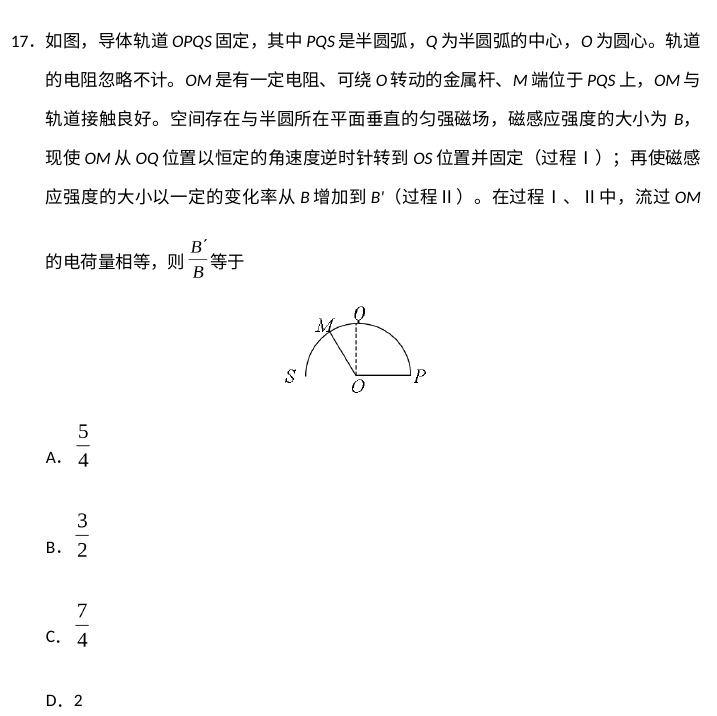
原始配图 1 · 原题及原图所用高中知识
法拉第电磁感应；平均电流；磁通量变化。
读题与思路
回路电阻只来自OM且不变，所以通过导体的总电荷量由磁通变化量除以电阻得到。
分步解析
- 设半圆半径l，OM电阻R。过程Ⅰ从OQ转至OS，回路面积增加一个四分之一圆，磁通变化ΔΦ₁=Bπl²/4，因此q₁=Bπl²/(4R)。
- 过程ⅡOM固定在OS，回路围成半圆，面积πl²/2；磁场从B到B′，q₂=(B′−B)πl²/(2R)。
- 题给q₁=q₂，约去公共项得B/4=(B′−B)/2，所以B′/B=3/2。
检查与易错点
过程Ⅰ改变面积，过程Ⅱ改变场强；不能把两段都当成同一个面积。总电荷可由平均感应电动势和平均电流计算，无需知道瞬时电流。
本题来源：paper · cross · drive-ref-1 · web-primary-doc
返回二、选择题（48分）
题目与已知条件
如图，abc是竖直面内的光滑固定轨道，ab水平，长度为2R；bc是半径为R的四分之一圆弧，与ab相切于b点。一质量为m的小球。始终受到与重力大小相等的水平外力的作用，自a点处从静止开始向右运动，重力加速度大小为g。小球从a点开始运动到其轨迹最高点，机械能的增量为
水平轨道ab与四分之一圆弧bc查看原题图／原始配图
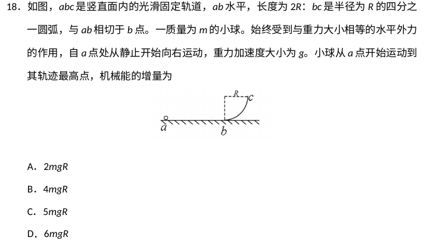
原始配图 1 · 原题及原图所用高中知识
功与机械能；动能定理；离轨后的运动分解。
读题与思路
轨迹最高点不在圆弧末端c。小球离开c后还会继续向上，同时水平外力仍在做功。
分步解析
- 从a到c，水平位移2R+R=3R，高度升高R。水平力大小mg，做功3mgR，重力做功−mgR，所以c处动能为2mgR，速度vc=2√(gR)，方向竖直向上。
- 离开c后竖直方向只受重力，上升到最高点耗时t=vc/g=2√(R/g)。水平初速度为0，水平加速度F/m=g，水平再移动x=gt²/2=2R。
- 全程水平位移5R，水平外力总功为5mgR。支持力不做功，重力是保守力，因此机械能增加量等于水平外力功，为5mgR。
检查与易错点
最高点只表示竖直速度为零，水平速度并不为零。若在c处就结束计算会漏掉2mgR的外力功。
本题来源：paper · cross · drive-ref-1 · web-primary-doc
返回二、选择题（48分）
题目与已知条件
如图，两个线圈绕在同一根铁芯上，其中一线圈通过开关与电源连接，另一线圈与远处沿南北方向水平放置在纸面内的直导线连接成回路。将一小磁针悬挂在直导线正上方，开关未闭合时小磁针处于静止状态。下列说法正确的是
线圈绕向、电源极性、开关及南北方向按原图保留查看原题图／原始配图
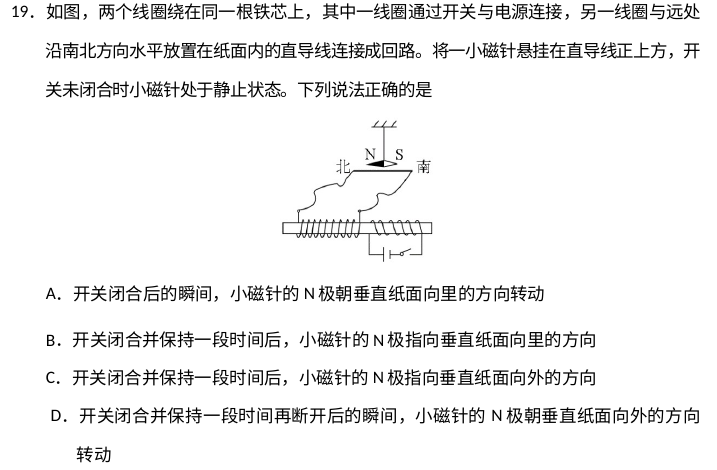
原始配图 1 · 原题及原图A.开关闭合后的瞬间，小磁针的N极朝垂直纸面向里的方向转动
B.开关闭合并保持一段时间后，小磁针的N极指向垂直纸面向里的方向
C.开关闭合并保持一段时间后，小磁针的N极指向垂直纸面向外的方向
D.开关闭合并保持一段时间再断开后的瞬间，小磁针的N极朝垂直纸面向外的方向转动
所用高中知识
互感；楞次定律；直导线磁场；右手定则。
读题与思路
区分开关动作的瞬间与直流电流稳定后的状态，次级回路并不长期通电。
分步解析
- 闭合瞬间初级电流增大，铁芯中磁通量变化；按线圈绕向和楞次定律，次级连接的直导线中产生由南向北的电流。
- 用右手定则，位于直导线正上方的小磁针处磁场垂直纸面向里，其N极开始向里偏转，A正确。
- 开关闭合并稳定一段时间后，磁通量不再变化，次级感应电流消失，小磁针趋向原先的南北方向，B、C错误。
- 断开瞬间磁通量减少，感应电流与闭合时相反，直导线上方磁场指向纸面外，小磁针N极向外偏转，D正确。
检查与易错点
恒定磁通量不产生感应电流。这里说的是小磁针“朝某方向转动”，不是瞬间已经完全指向该方向。
本题来源：paper · cross · drive-ref-1 · web-primary-doc
返回二、选择题（48分）
题目与已知条件
2017年，人类第一次直接探测到来自双中子星合并的引力波。根据科学家们复原的过程，在两颗中子星合并前约100 s时，它们相距约400 km，绕二者连线上的某点每秒转动12圈，将两颗中子星都看作是质量均匀分布的球体，由这些数据、万有引力常量并利用牛顿力学知识，可以估算出这一时刻两颗中子星
查看原题图／原始配图
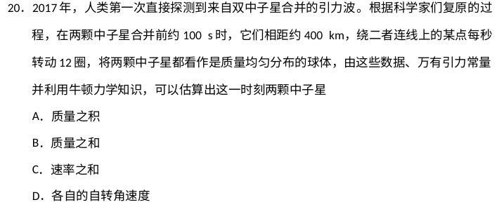
原始配图 1 · 原题及原图读题与思路
两星绕共同中心转动，角速度相同；距离给出两轨道半径之和，但不能拆分各自半径。
分步解析
- 设距离d=r₁+r₂，角速度ω=2π×12。两星受引力大小相同，因此m₁ω²r₁=m₂ω²r₂。
- 由Gm₁m₂/d²=m₁ω²r₁及上式，可推出m₁+m₂=ω²d³/G。已知d、ω和G，质量之和可求，对应原图B。质量如何分配仍未知，所以质量之积不能确定，A错误。
- 两星速率之和v₁+v₂=ω(r₁+r₂)=ωd，可求，C正确；单独的v₁、v₂还需质量比。
- 观测的每秒12圈描述绕共同中心的公转，不能据此确定各星自转角速度，D错误。
检查与易错点
“每秒转动12圈”应先转为角速度24π rad/s。公转与自转是不同运动。单个星体的质量和速率都需要知道质量之比才能求出。
本题来源：paper · cross · drive-ref-1 · web-primary-doc
返回二、选择题（48分）
题目与已知条件
图中虚线a、b、c、d、f代表匀强电场内间距相等的一组等势面，已知平面b上的电势为2 V。一电子经过a时的动能为10 eV，从a到d的过程中克服电场力所做的功为6 eV。下列说法正确的是
间距相等的等势面a、b、c、d、f查看原题图／原始配图
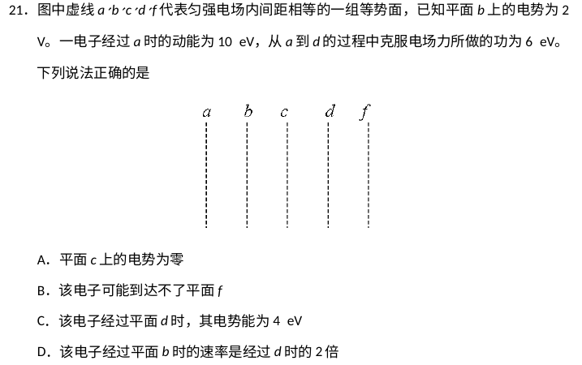
原始配图 1 · 原题及原图读题与思路
总动能为正并不足以保证到达某等势面；平行等势面的速度分量不会被电场改变，能供“爬升电势能”的只有法向动能。
分步解析
- 电子电荷−e，从a到d克服电场力做功6 eV，电势能增加6 eV，因此φd−φa=−6 V。a到d跨3个等间距，电势每相邻面降2 V。已知φb=2 V，故a、b、c、d、f电势为4、2、0、−2、−4 V，A正确。
- 电子电势能Ep=−eφ，各处为−4、−2、0、2、4 eV；a处动能10 eV，所以总能量6 eV。经过b、d时动能分别8与4 eV，速率比为√2，C的4 eV电势能与D的2倍速率都错误。
- 到f需增加电势能8 eV。若a处10 eV动能分成法向7 eV、切向3 eV，则电子能到d（法向尚余1 eV），但到不了f，因为法向能量不足8 eV。切向3 eV无法转化为法向“越过等势面”的能量。因此B的“可能到达不了”成立。
检查与易错点
不要仅算出f处总动能应为2 eV就断言必能到达。题目未限定电子垂直等势面入射。
本题来源：paper · cross · drive-ref-1 · web-primary-doc
原理综卷：非选择题共174分。第22—32题为必考题，每个试题考生都必须作答。第33—38题为选考题，考生根据要求作答。
（一）必考题，共129分。以上174分、129分均为整份理综的跨科分值。本册物理必考题为22—25题，共47分。
相关题目：第 22 题 · 第 23 题 · 第 24 题 · 第 25 题
返回三、非选择题与必考题
题目与已知条件
（5分）
如图（a），一弹簧上端固定在支架顶端，下端悬挂一托盘；一标尺由游标和主尺构成，主尺竖直固定在弹簧左边；托盘上方固定有一能与游标刻度线准确对齐的装置，简化为图中的指针。
现要测量图（a）中弹簧的劲度系数，当托盘内没有砝码时，移动游标，使其零刻度线对准指针，此时标尺读数为1.950 cm；当托盘内放有质量为0.100 kg的砝码时，移动游标，再次使其零刻度线对准指针，标尺示数如图（b）所示，其读数为______cm。当地的重力加速度大小为9.80 m/s2，此弹簧的劲度系数为______N/m（保留3位有效数字）。
图（a）实验装置；图（b）游标和主尺。原始刻线、对齐关系与读数完整保留查看原题图／原始配图
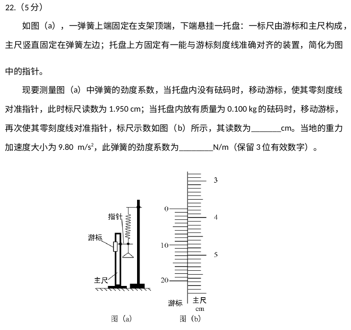
原始配图 1 · 原题及原图读题与思路
两次标尺读数差对应增加砝码造成的伸长；1.950 cm不是弹簧无负载的原长。
分步解析
- 这是20分度游标，最小分度0.05 mm。图示主尺读数37 mm，游标第15条与主尺对齐，读数37+15×0.05=37.75 mm=3.775 cm。
- 加砝码后的额外伸长Δx=3.775−1.950=1.825 cm=0.01825 m。增加重力ΔF=0.100×9.80=0.980 N。
- k=ΔF/Δx=0.980/0.01825 N/m=53.6986… N/m，保留3位有效数字53.7 N/m。
检查与易错点
本题装置是游标标尺，不是螺旋测微器。空托盘已给弹簧负载，所以应使用读数差抵消托盘重力。
本题来源：paper · cross · drive-ref-1 · web-primary-doc
返回三、非选择题与必考题
题目与已知条件
（10分）某实验小组利用如图（a）所示的电路探究在25℃～80℃范围内某热敏电阻的温度特性，所用器材有：置于温控室（图中虚线区域）中的热敏电阻RT，其标称值（25℃时的阻值）为900.0 Ω；电源E（6 V，内阻可忽略）：电压表Ⓥ（量程150 mV）；定值电阻R0（阻值20.0 Ω），滑动变阻器R1（最大阻值为1 000 Ω）；电阻箱R2（阻值范围0-999.9 Ω）；单刀开关S1，单刀双掷开关S2。
图（a）热敏电阻测量电路，所有接点、极性及开关位置保持原图实验时，先按图（a）连接好电路，再将温控室的温度t升至80.0℃，将S2与1端接通，闭合S1，调节R1的滑片位置，使电压表读数为某一值U0：保持R1的滑片位置不变，将R2置于最大值，将S2与2端接通，调节R2，使电压表读数仍为U0：断开S1，记下此时R2的读数，逐步降低温控室的温度t，得到相应温度下R2的阻值，直至温度降到25.0℃，实验得到的R2-t数据见下表。
| t/℃ | 25.0 | 30.0 | 40.0 | 50.0 | 60.0 | 70.0 | 80.0 |
|---|
| R2/Ω | 900.0 | 680.0 | 500.0 | 390.0 | 320.0 | 270.0 | 240.0 |
|---|
回答下列问题：
（1）在闭合S1前，图（a）中R1的滑片应移动到______（填“a”或“b”）端；
（2）在图（b）的坐标纸上补齐数据表中所给数据点，并做出R2-t曲线：
图（b）坐标纸（需补描数据点）；图（c）电阻箱旋钮，保留所有原始刻度、点及读数（3）由图（b）可得到RT在25℃-80℃范围内的温度特性，当t=44.0℃时，可得RT=______Ω；
（4）将RT握于手心，手心温度下R2的相应读数如图（c）所示，该读数为______Ω，则手心温度为______℃。
查看原题图／原始配图
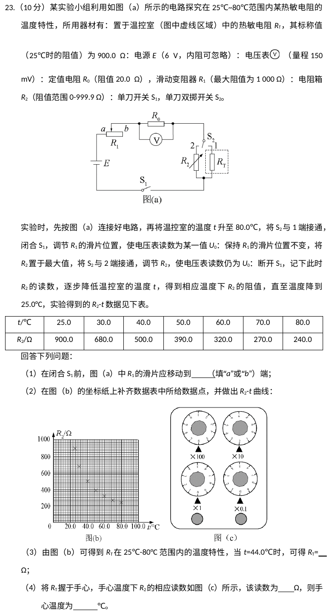
原始配图 1 · 原题及原图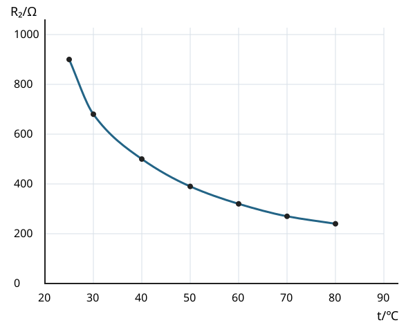
修订前解析配图 2 · 依据题表原创绘制所用高中知识
欧姆定律；等效替代法；电阻箱读数；传感器标定。
读题与思路
保持R₁位置不变，用电阻箱替代热敏电阻；固定R₀上的电压相同意味着回路电流相同，从而两被替代电阻相同。
分步解析
- 闭合S₁前，滑片应位于b端，使R₁接入电阻最大，减小电流，保护150 mV电压表。
- 选RT时R₀电压为U₀；改选R₂并调到同一U₀，R₀电流不变，且电源、R₁、R₀都不变，故R₂=RT。每次换温度后重新替代即可得到其阻值。
- 把七个点(25,900)、(30,680)、(40,500)、(50,390)、(60,320)、(70,270)、(80,240)按℃、Ω绘出，并用平滑递减曲线连接，不能硬作一条直线。依据题表原创绘制
- 从曲线在44.0 ℃处读得RT约450 Ω。图(c)电阻箱四个旋钮分别为6×100、2×10、0×1、0×0.1，合计620.0 Ω。
- 沿620.0 Ω水平线到标定曲线，再向温度轴投影，得到手心温度约33.0 ℃。
答案
（1）b；（2）描出7个数据点，用平滑曲线连接，R₂随t升高而减小（图见解析）；（3）约450 Ω；（4）620.0 Ω，约33.0 ℃。
检查与易错点
电阻随温度升高而减小，是负温度系数热敏电阻。图(c)×0.1档即使读0也保留小数位，写620.0 Ω。
本题来源：paper · cross · drive-ref-1 · web-primary-doc
返回三、非选择题与必考题
题目与已知条件
（12分）一质量为m的烟花弹获得动能E后，从地面竖直升空，当烟花弹上升的速度为零时，弹中火药爆炸将烟花弹炸为质量相等的两部分，两部分获得的动能之和也为E，且均沿竖直方向运动。爆炸时间极短。重力加速度大小为g，不计空气阻力和火药的质量，求
（1）烟花弹从地面开始上升到弹中火药爆炸所经过的时间；
（2）爆炸后烟花弹向上运动的部分距地面的最大高度。
查看原题图／原始配图
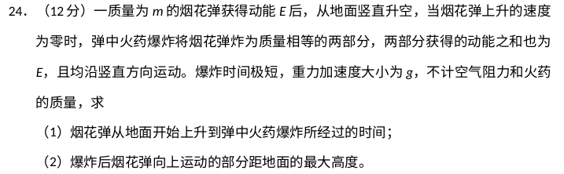
原始配图 1 · 原题及原图读题与思路
爆炸前最高点速度为零，短暂爆炸过程动量守恒，等质量两部分必以等速率反向运动。
分步解析
- 地面起飞动能E=mv₀²/2，故v₀=√(2E/m)。到爆炸时速度0，t=v₀/g=(1/g)√(2E/m)。
- 爆炸高度h₀=v₀²/(2g)=E/(mg)。设两部分质量均m/2，爆炸后速率u、u′，动量守恒0=(m/2)u−(m/2)u′，所以u=u′。
- 两部分总动能为E，即2×[(m/2)u²/2]=E，得u²=2E/m。向上部分再上升Δh=u²/(2g)=E/(mg)。
- 距地面最大高度H=h₀+Δh=2E/(mg)。
答案
（1）t=(1/g)√(2E/m)；（2）H=2E/(mg)。
检查与易错点
爆炸增加机械能，但瞬间总动量仍守恒。爆炸后的动能总和为E，不是每一块的动能都为E。
本题来源：paper · cross · drive-ref-1 · web-primary-doc
返回三、非选择题与必考题
题目与已知条件
题面校注：本EOL转载第(3)问的核素上下标误排；对照新东方同题，第(3)问研究对象为氘核21H。原图保留如下，解析按氘核作答。
（20分）如图，在y>0的区域存在方向沿y轴负方向的匀强电场，场强大小为E；在y<0的区域存在方向垂直于xOy平面向外的匀强磁场。一个氕核和一个氘核先后从y轴上y=h点以相同的动能射出，速度方向沿x轴正方向。已知进入磁场时，速度方向与x轴正方向的夹角为60°，并从坐标原点O处第一次射出磁场。的质量为m，电荷量为q不计重力。求
y＞0：电场沿y轴负方向；y＜0：磁场垂直纸面向外；出发点y=h（1）第一次进入磁场的位置到原点O的距离
（2）磁场的磁感应强度大小
（3）第一次离开磁场的位置到原点O的距离
查看原题图／原始配图
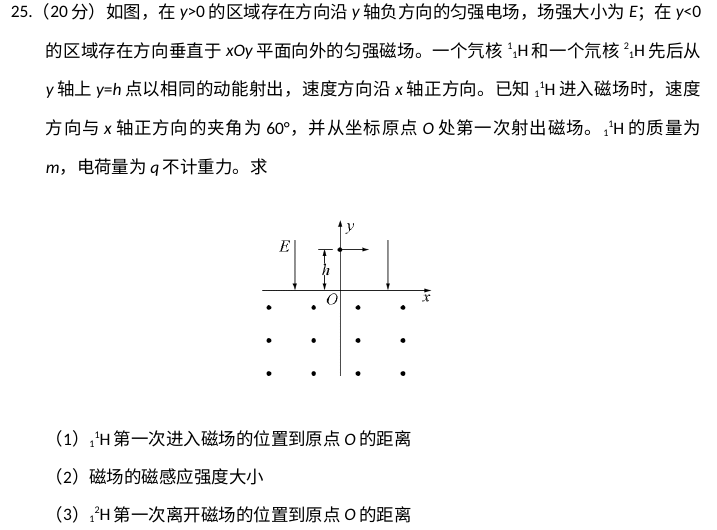
原始配图 1 · 原题及原图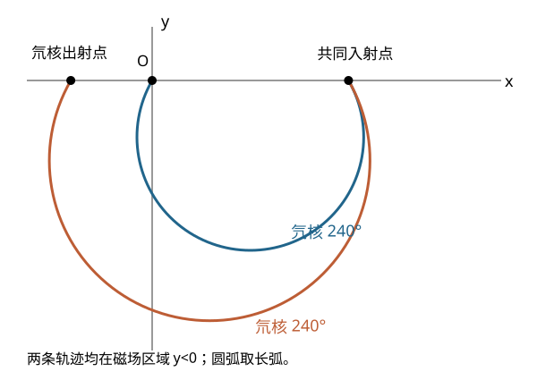
修订前解析配图 2 · 原创轨迹补图所用高中知识
类平抛；动能与质量；洛伦兹力；共同入射点与长圆弧。
读题与思路
两种核电荷相同、初动能相同。先解氕核的电场运动，再比较氘核的速度、时间和半径。
分步解析
- 氕核电场加速度qE/m，竖直初速度0。从高h落到x轴时间t=√(2mh/(qE))，竖直速度大小vy=√(2qEh/m)。入射方向与+x夹60°，所以vx=vy/√3=√(2qEh/(3m))。
- 入射点到O的距离d=vxt=2h/√3=2√3h/3。进入磁场后速率v=√(vx²+vy²)=√(8qEh/(3m))。
- 正核入场速度向右下，磁场向外，洛伦兹力使轨迹顺时针弯转，圆心在x轴下方。入射与首次出射两点的弦长d=2r sin60°=√3r，故r=2h/3。实际在y<0中走的是240°长弧，而不是画在y>0中的120°短弧。
- 由r=mv/(qB)得B=√(6mE/(qh))。此根号覆盖整个分式。
- 氘核质量2m，初动能相同，水平初速度为氕核的1/√2。电场加速度减半，下落时间变为√2t，所以水平位移仍为d；两核在x轴的入射点相同。竖直速度也为氕核的1/√2，入射角仍为60°。
- 氘核入磁场速率v′=v/√2，轨道半径r′=2mv′/(qB)=√2r。其入射点到首次出射点的弦长d′=√3r′=√2d。因为都向左侧出射，氘核出射点在O左侧，距O为d′−d=(√2−1)d=2(√6−√3)h/3。
- 下图按上述几何关系绘制，两条轨迹共用同一入射点，磁场内均取240°圆弧。原创轨迹补图
答案
（1）2√3h/3；（2）B=√(6mE/(qh))；（3）2(√6−√3)h/3，出射点位于O左侧。
检查与易错点
相同初动能不等于相同速度。氘核在电场内停留更久，恰好补偿较小的水平速度，所以不能把两入射点画成不同位置。
本题来源：paper · cross · drive-ref-1 · web-primary-doc
原理综卷：选考题共45分。请考生从2道物理题、2道化学题、2道生物题中每科任选一题作答。如果多做，则每学科按所做的第一题计分。
本册物理选考题为第33、34题，每题15分。以下两道题均完整收录。
相关题目：第 33 题 · 第 34 题
返回（二）选考题
题目与已知条件
［物理—选修3-3］（15分）
（1）（5分）如图，一定质量的理想气体从状态a开始，经历过程①、②、③、④到达状态e，对此气体，下列说法正确的是______（选对1个得2分，选对2个得4分，选对3个得5分；每选错1个扣3分，最低得分为0分）。
理想气体T-V图：a→b→c→d→eA．过程①中气体的压强逐渐减小
B．过程②中气体对外界做正功
C．过程④中气体从外界吸收了热量
D．状态c、d的内能相等
E．状态d的压强比状态b的压强小
（2）（10分）如图，容积为V的汽缸由导热材料制成，面积为S的活塞将汽缸分成容积相等的上下两部分，汽缸上部通过细管与装有某种液体的容器相连，细管上有一阀门K。开始时，K关闭，汽缸内上下两部分气体的压强均为p0，现将K打开，容器内的液体缓慢地流入汽缸，当流入的液体体积为时，将K关闭；活塞平衡时其下方气体的体积减小了，不计活塞的质量和体积，外界温度保持不变，重力加速度大小为g。求流入汽缸内液体的质量。
容器、阀门K、导管及汽缸活塞位置按原图保留查看原题图／原始配图
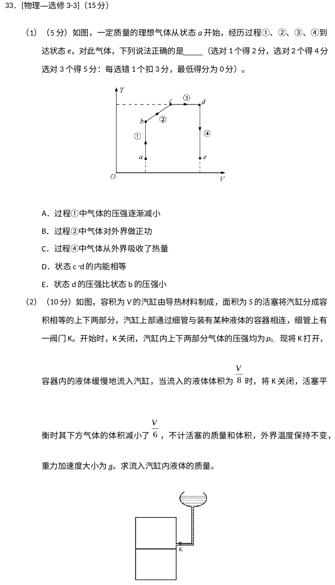
原始配图 1 · 原题及原图所用高中知识
理想气体状态方程；内能；体积功；等温分区气体。
读题与思路
T—V图中的等压线是过原点射线。液体进入气缸后，上半部总容积不全是气体，必须扣去液体体积。
分步解析
- 第(1)问过程①等容升温，压强增加，A错。②中体积增大，气体对外做正功，B对。④等容降温，内能减少并向外放热，C错。c、d温度相同，内能相等，D对。
- T—V图中p与T/V成正比。从原点看d的斜率小于b，故pd<pb，E对。第(1)问答案BDE。
- 第(2)问初始上下气体体积均V/2，压强p₀。最终下方体积V₂=V/2−V/6=V/3。上方气体体积为总容积减下方气体再减液体：V₁=V−V/3−V/8=13V/24。
- 上下两团气体分别等温，p₁V₁=p₀V/2、p₂V₂=p₀V/2，所以p₁=12p₀/13、p₂=3p₀/2。
- 活塞轻且平衡，气体下推与液体重力之和等于下方气体上推：p₁S+Mg=p₂S。故流入液体质量M=(p₂−p₁)S/g=15p₀S/(26g)。
答案
（1）BDE；（2）液体质量15p₀S/(26g)。
检查与易错点
两团气体互不连通，分别用各自的pV不变量。V/8是液体体积，而V/6是下方气体减少量，两者不能互换。
本题来源：paper · cross · drive-ref-1 · web-primary-doc
返回（二）选考题
题目与已知条件
［物理—选修3-4］（15分）
（1）（5分）如图，△ABC为一玻璃三棱镜的横截面，∠A=30°，一束红光垂直AB边射入，从AC边上的D点射出，其折射角为60°，则玻璃对红光的折射率为______。若改用蓝光沿同一路径入射，则光线在D点射出时的折射角______（填“小于”“等于”或“大于”）60°。
三棱镜ABC、D点法线、30°顶角与60°折射角保持原图（2）（10分）一列简谐横波在 s时的波形图如图（a）所示，P、Q是介质中的两个质点，图（b）是质点Q的振动图像。求
（i）波速及波的传播方向；
（ii）质点Q的平衡位置的x坐标。
图（a）波形图及18 cm距离；图（b）Q振动图。刻度、虚线及相位完整保留查看原题图／原始配图
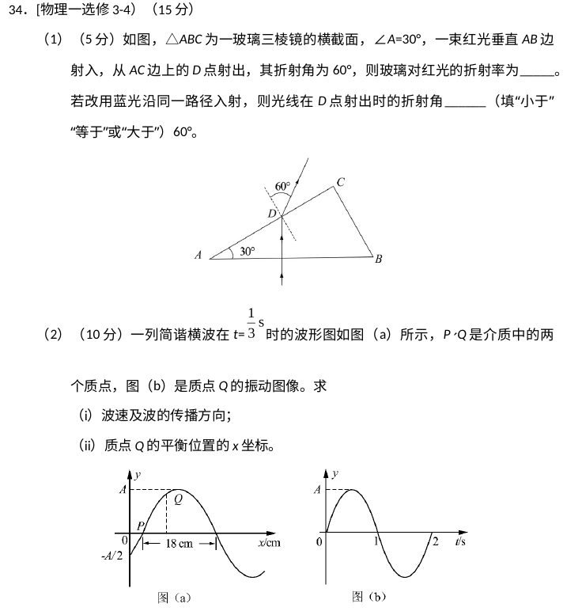
原始配图 1 · 原题及原图所用高中知识
折射定律；正常色散；波速；振动相位与空间位置。
读题与思路
光学题先找D处入射角；波动题同时利用Q的时间图和同一时刻的空间图判断方向与位置。
分步解析
- 第(1)问红光垂直AB入射，方向不变。两面夹角30°，D处玻璃内入射角为30°，空气中折射角60°。n=sin60°/sin30°=√3。蓝光折射率更大，同一入射角下出射折射角更大，填“大于”。
- 第(2)(i)，空间图18 cm为半波长，λ=36 cm；Q的振动周期T=2 s。波速u=λ/T=0.18 m/s。
- t=1/3 s时，Q时间图显示其向上运动；空间图中Q位于上升斜坡，只有波形向左移动才会使这个位置的位移随时间增大，所以传播方向沿x负方向。
- 第(ii)，Q图从t=0向上过平衡位置，可写其相位为πt。t=1/3 s时Q相位π/3。空间原点处位移为−A/2且曲线向右上升，在当前向左传播下，其相位可取−π/6。
- 同一时刻Q比原点的相位多π/2，相当于四分之一波长；原图Q位于相邻的这一段，故xQ=λ/4=9 cm。也可用相位对应时间差T/4=0.5 s，乘波速18 cm/s得9 cm。
答案
（1）√3；大于。（2）（i）0.18 m/s，沿x轴负方向；（ii）xQ=9 cm。
检查与易错点
不能只凭空间图的上坡下坡判断传播方向，必须配合质点振动方向。xQ取图中所标的那一质点，而非任意相差整波长的位置。
本题来源：paper · cross · drive-ref-1 · web-primary-doc
题源与核验说明
- 2018.html旧版解析文件；SHA-256：510767ab6af05c7908e9608b7ddbbe8a19f0696b4c52d3713c62c0c9b694fb20
- 2018年高考真题——理科综合（全国卷Ⅰ） Word版含解析【KS5U 高考】.doc所附参考资料；SHA-256：e6b187dad9347a5af105d61a2c97932bced2cb3677e27736bedfd54e58963157
- 2018-0.doc所附参考资料；SHA-256：8738ddd2b8356ab78209f3d4b8e0ae80322205c21732c2a389823ea016511aa5
- 中国教育在线 2018全国Ⅰ理综原题Word原站标注来源湖南招生考试港。下载DOC并转换28页PDF；q14—q25裁自第5—11页，q33—q34裁自第15—17页。题15保留四个完整原图；题16研究对象c与原图完整。q23-curve.svg与q25-arcs.svg为原创教学补图。 第20题本图A为质量之积、B为质量之和，正确选BC；第25题第(3)问核素上下标误排，已与新东方氘核题面交叉核对并在正文披露。
- 新东方 2018全国Ⅰ物理逐题解析2018-06公开13页物理解析PDF，重新下载用于交叉核对答案。其个别转录如第16题研究对象、游标名词等存在瑕疵，本书按原题改正；第21题可达性和第25题240°长弧均重新推导。
- 中国教育在线：2018全国Ⅰ理综（湖南招生考试港）独立复核于2026-10-06联网检索并确认页面标注2018全国Ⅰ理综及来源湖南招生考试港；下载DOC在渲染完整核对物理页。